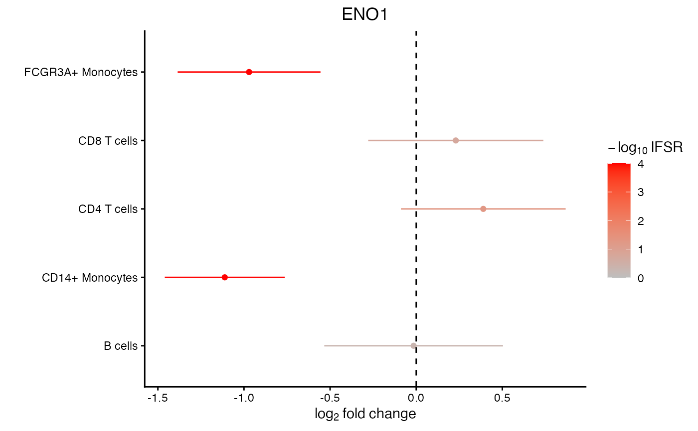
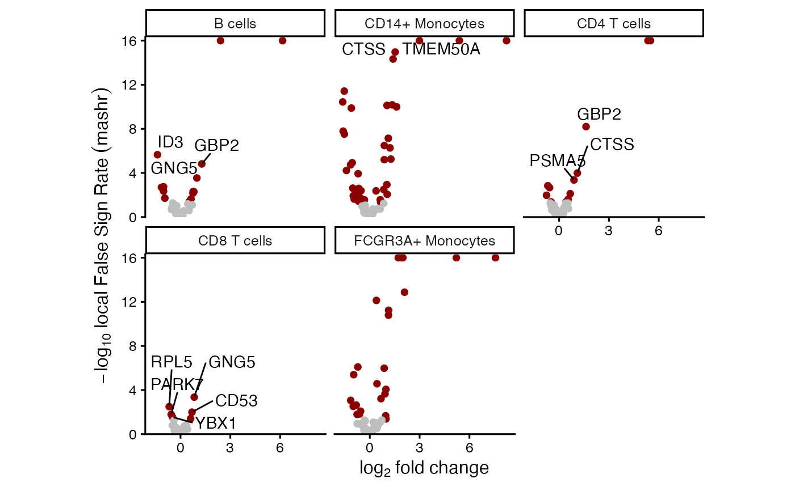

Run mash analysis on dreamlet results
Arguments
- fit
result from
dreamlet()- coefList
coefficient to be analyzed. Assumes 1) the null distribution of the two coefficients is simular, 2) the effects sizes are on the same scale, and 3) the effect estimates should be shrunk towards each other. If these are not satisfied, run separately on each coefficient
Details
Apply mashr analysis (Urbut et al. 2019)
on the joint set of coefficients for each gene and cell type. mashr is a Bayesian statistical method that borrows strength across tests (i.e. genes and cell types) by learning the distribution of non-zero effects based the obesrved logFC and standard errors. The method then estimates the posterior distributions of each coefficient based on the observed value and the genome-wide emprical distribution.
mashr has been previously applied to differential expression in GTEx data using multiple tissues from the same set of donors (Oliva et al. 2020)
.
In single cell data, a given gene is often not sufficiently expressed in all cell types. So it is not evaluated in a subsets of cell types, and its coefficient value is NA. Since mashr assumes coefficients and standard errors for every gene and cell type pair, entries with these missing values are set to have coef = 0, and se = 1e6. The output of mashr is then modified to set the corresponding values to NA, to avoid nonsensical results downstream.
References
Oliva M, Munoz-Aguirre M, Kim-Hellmuth S, Wucher V, Gewirtz AD, Cotter DJ, Parsana P, Kasela S, Balliu B, Vinuela A, others (2020).
“The impact of sex on gene expression across human tissues.”
Science, 369(6509), eaba3066.
https://doi.org/10.1126/science.aba3066.
Urbut SM, Wang G, Carbonetto P, Stephens M (2019).
“Flexible statistical methods for estimating and testing effects in genomic studies with multiple conditions.”
Nature genetics, 51(1), 187–195.
https://doi.org/10.1038/s41588-018-0268-8.
Examples
library(muscat)
library(mashr)
library(SingleCellExperiment)
data(example_sce)
# create pseudobulk for each sample and cell cluster
pb <- aggregateToPseudoBulk(example_sce[1:100, ],
assay = "counts",
cluster_id = "cluster_id",
sample_id = "sample_id",
verbose = FALSE
)
# voom-style normalization
res.proc <- processAssays(pb, ~group_id)
#> B cells...
#> 0.015 secs
#> CD14+ Monocytes...
#> 0.016 secs
#> CD4 T cells...
#> 0.016 secs
#> CD8 T cells...
#> 0.015 secs
#> FCGR3A+ Monocytes...
#> 0.016 secs
# Differential expression analysis within each assay,
# evaluated on the voom normalized data
res.dl <- dreamlet(res.proc, ~group_id)
#> B cells...
#> 0.0086 secs
#> CD14+ Monocytes...
#> 0.0088 secs
#> CD4 T cells...
#> 0.0081 secs
#> CD8 T cells...
#> 0.0061 secs
#> FCGR3A+ Monocytes...
#> 0.0084 secs
# run MASH model
# This can take 10s of minutes on real data
# This small datasets should take ~30s
res_mash <- run_mash(res.dl, "group_idstim")
# extract statistics from mashr model
# NA values indicate genes not sufficiently expressed
# in a given cell type
# original logFC
head(res_mash$logFC.original)
#> B cells CD14+ Monocytes CD4 T cells CD8 T cells
#> AGTRAP NA 0.1413919 NA NA
#> AKR1A1 0.2593698 0.4062277 NA NA
#> APH1A_ENSG00000117362 NA 0.8309128 -0.01276698 NA
#> ATP1A1 0.4155968 -0.8213405 -0.50007017 -0.4932812
#> ATP5F1 -0.5963830 -1.4192064 -0.21508103 -0.3187010
#> ATP6V0B -0.5477765 -0.6362835 0.09203165 0.4527028
#> FCGR3A+ Monocytes
#> AGTRAP 0.09674802
#> AKR1A1 -0.39808296
#> APH1A_ENSG00000117362 -0.47531235
#> ATP1A1 -0.28642822
#> ATP5F1 -1.11230092
#> ATP6V0B -0.59144737
# posterior mean for logFC
head(get_pm(res_mash$model))
#> B cells CD14+ Monocytes CD4 T cells CD8 T cells
#> AGTRAP NA 0.0362251 NA NA
#> AKR1A1 0.06170194 0.1970405 NA NA
#> APH1A_ENSG00000117362 NA 0.6524837 0.03004732 NA
#> ATP1A1 0.06322541 -0.7415955 -0.24386688 -0.2217076
#> ATP5F1 -0.51539801 -1.1590924 -0.32247901 -0.4103803
#> ATP6V0B -0.37035207 -0.5312607 -0.07334977 0.1531090
#> FCGR3A+ Monocytes
#> AGTRAP 0.01943353
#> AKR1A1 -0.15086481
#> APH1A_ENSG00000117362 -0.22254651
#> ATP1A1 -0.13633895
#> ATP5F1 -0.75977816
#> ATP6V0B -0.55588243
# how many gene-by-celltype tests are significant
# i.e. if a gene is significant in 2 celltypes, it is counted twice
table(get_lfsr(res_mash$model) < 0.05, useNA = "ifany")
#>
#> FALSE TRUE <NA>
#> 276 99 110
# how many genes are significant in at least one cell type
table(apply(get_lfsr(res_mash$model), 1, min, na.rm = TRUE) < 0.05)
#>
#> FALSE TRUE
#> 48 49
# how many genes are significant in each cell type
apply(get_lfsr(res_mash$model), 2, function(x) sum(x < 0.05, na.rm = TRUE))
#> B cells CD14+ Monocytes CD4 T cells CD8 T cells
#> 14 43 12 6
#> FCGR3A+ Monocytes
#> 24
# examine top set of genes
# which genes are significant in at least 1 cell type
sort(names(get_significant_results(res_mash$model)))[1:10]
#> [1] "ATP1A1" "ATP5F1" "ATP6V0B" "CAPZB" "CD52" "CD53" "ENO1"
#> [8] "GNG5" "MCL1" "NDUFS5"
# Lets examine ENO1
# There is a lot of variation in the raw logFC
res_mash$logFC.original["ENO1", ]
#> B cells CD14+ Monocytes CD4 T cells CD8 T cells
#> 0.04258043 -1.25091407 0.58319641 0.44458114
#> FCGR3A+ Monocytes
#> -1.07292439
# posterior mean after borrowing across cell type and genes
get_pm(res_mash$model)["ENO1", ]
#> B cells CD14+ Monocytes CD4 T cells CD8 T cells
#> -0.0149475 -1.1116803 0.3896229 0.2298768
#> FCGR3A+ Monocytes
#> -0.9704437
# forest plot based on mashr results
plotForest(res_mash, "ENO1")

# volcano plot based on mashr results
# yaxis uses local false sign rate (lfsr)
plotVolcano(res_mash)
#> Warning: Removed 12 rows containing missing values or values outside the scale range
#> (`geom_text_repel()`).

# Comment out to reduce package runtime
# gene set analysis using mashr results
# library(zenith)
# go.gs = get_GeneOntology("CC", to="SYMBOL")
# df_gs = zenith_gsa(res_mash, go.gs)
# Heatmap of results
# plotZenithResults(df_gs, 2, 1)